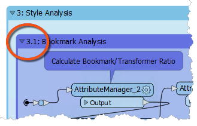
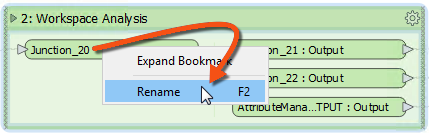
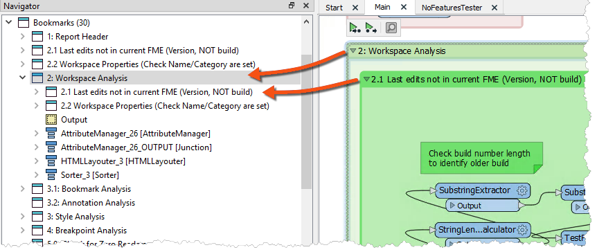
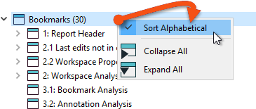
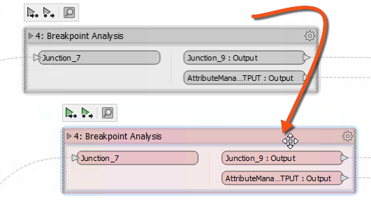
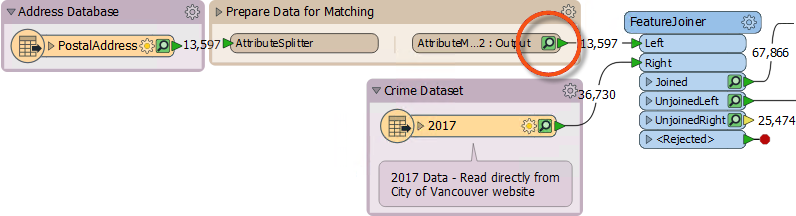
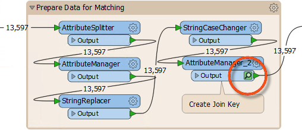

After completing this lesson, you’ll be able to:
Bookmarks play an essential role in a well-styled workspace for many reasons, including these:
A bookmark is a great way of indicating that a particular section of a workspace is for a specific purpose. By subdividing a workspace this way, the layout is often easier to follow.
As one user has put it, bookmarks are like paragraphs for your workspace!
The above workspace illustrates how to mark up different workspace sections using bookmarks. As you can see, subdividing bookmarks further by nesting one bookmark inside another is permitted.
Collapsible Bookmarks
You can click the small icon in the top-left corner of a bookmark to collapse it:

Collapsing a bookmark means it is compressed down to the size of a single transformer, displaying none of the contents except for where data enters or exits the bookmark:

Clicking the icon a second time re-opens the bookmark to its previous size.
This functionality allows you to render large workspace sections in a much smaller area and only open them when editing is required.
For example, the section of the workspace displayed above might become this:

Re-opening a collapsed bookmark adjusts the workspace's layout, moving other transformers or bookmarks out of the way without overlap. Re-closing the bookmark causes the opposite to occur.
For example, if you expand bookmark three (Style) in the above screenshot, then bookmarks four and five move to one side to accommodate it. When you collapse bookmark three again, the reverse occurs to give the same compact layout as before.
You can rename the input and output ports on collapsed bookmarks to help clarify the data entering and exiting:

You can do this by double-clicking the object, pressing F2, or using the Rename option on the context menu.
The Workbench Navigator window lists all bookmarks. Each bookmark appears in order, and you can expand it to view its contents. It may include feature types, transformers, or nested bookmarks:

Clicking or double-clicking a bookmark in the Navigator selects it and brings it into view. Bookmarks both divide a workspace into sections visually and let you jump to different parts of that workspace.
In this way, bookmarks are like the chapter headings in a book!
Bookmark Navigator
Bookmarks can also be navigated on the FME Workbench toolbar using the Bookmark Navigator:

Besides being a way to access bookmarks quickly, you can use the Bookmark Navigator tool to present your workspace. By clicking the arrow button (or pressing the keyboard spacebar), you flip from bookmark to bookmark using animation in a way that would be very useful when showing the workspace as part of a presentation.
To access the functionality, you must ensure it appears on the toolbar. You can do this by right-clicking on the toolbar and using the customize option.

The order of bookmarks in that window is alphabetical, which may differ from the order in which you wish to present a workspace.
In that case, right-click on Bookmarks in the Navigator window and turn off the default option to "Sort Alphabetically."

Bookmarks can then be dragged up and down in the Navigator window to give the correct order. Additionally, a new option on the bookmark Properties dialog allows you to exclude specific bookmarks from the Bookmark Navigator. This view does not include nested bookmarks by default. You have to set nested bookmarks to Include for them to appear in the Bookmark Navigator.
For more information, see this article on bookmarks on the Safe Software blog.
Bookmarks define a section of the workspace containing several objects. When editing a workspace without bookmarks, moving objects is done by selecting the object or objects and dragging them to a new position.
However, when bookmarks divide a workspace, you can move objects by dragging the bookmark to a new position. When an object is inside the bookmark, it moves as the bookmark does.

Using this technique, you can move large groups of objects around the workspace canvas to create a better layout. Objects inside a bookmark will move whether the bookmark is collapsed or expanded.
Remember that one of the bookmark properties is labeled Contents and has the value "Move with Bookmark" or "Move Independently." The former allows you to move objects with the transformer; the latter causes objects to remain in position when you move a bookmark.
When a workspace is run with Feature Caching turned on, features are cached at every transformer. As you can imagine, in larger workspaces, this leads to a lot of data being cached, sometimes unnecessarily:

Notice in the above screenshot that every transformer in the Prepare Data for Matching bookmark is being cached.
However, when a bookmark is collapsed, then caching only occurs on the bookmark output objects:

This feature means that data is cached only for the final transformer in the bookmark, saving considerable time and resources:

You want to avoid putting a workspace into production when caching is turned on, regardless of whether your bookmarks are collapsed. This technique is only recommended in workspace creation's design, authoring, and testing phases.